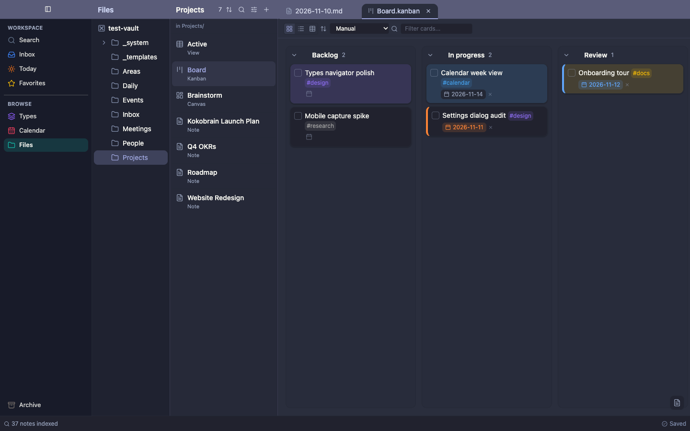
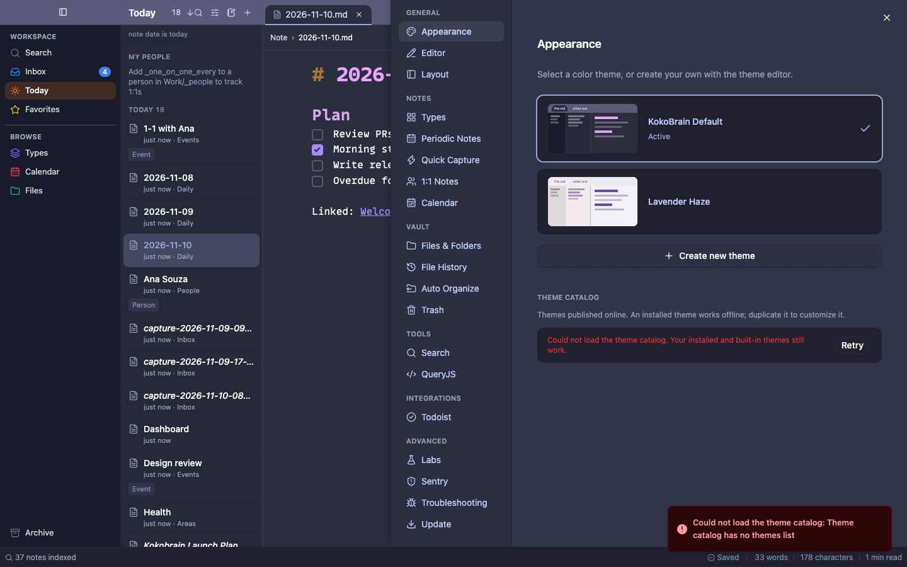
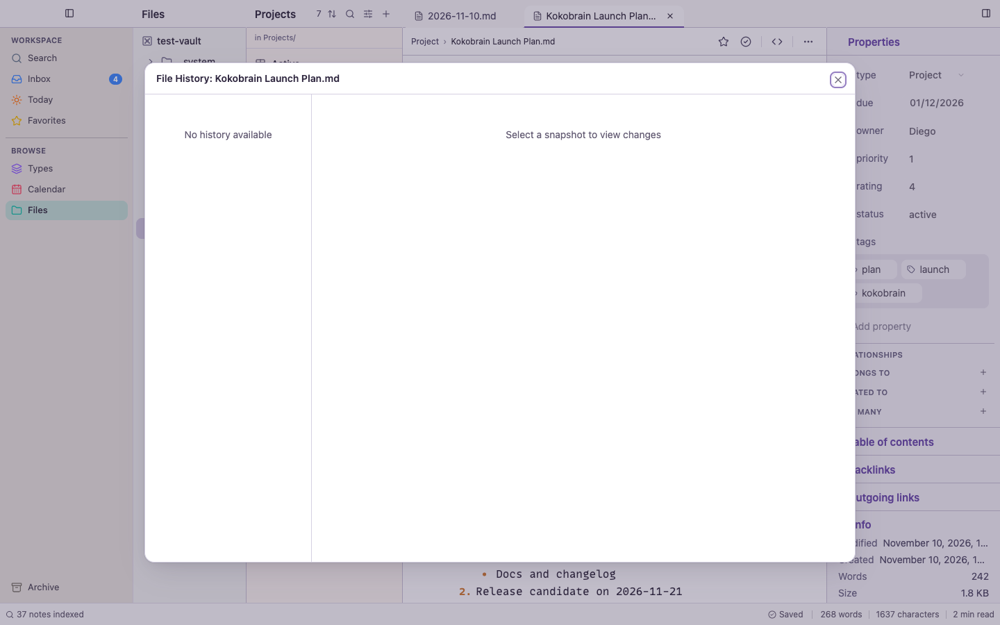
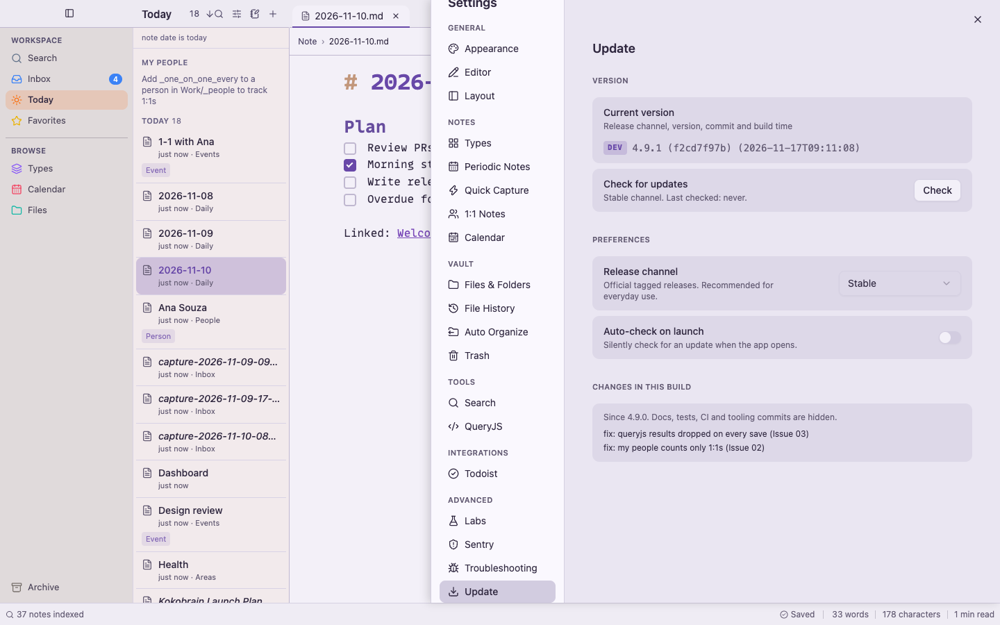

Before real app, dark

The kanban plugin has no undo at all. Lane trash, card trash and rule/theme trash act on click, and Enter on a mod dialog hits the red button.
Before live recreation, try it
Component sheet for the feedback and shared-primitive proposals. Every section shows the real screenshot or a faithful recreation of today (Before) next to the proposed UI (After). The After panels use Kokobrain's real tokens from src/app.css and follow the Light/Dark toggle above. Screenshots are fixed captures. Most After panels are interactive: click, hover, tab through them.
Problem. Kanban card, lane and archived-item deletes, auto-organize rule deletes and user theme deletes happen at once with no confirm and no undo. Destructive mod dialogs focus the destructive button, so Enter confirms, and Undo toasts last only 4 s. Trash confirmation and File History restore are left as they are and listed as open questions below.

The kanban plugin has no undo at all. Lane trash, card trash and rule/theme trash act on click, and Enter on a mod dialog hits the red button.
Open questions for the owner, not changed here: Trash keeps its native confirm to match the file explorer, and File History restore keeps its confirm even though Cmd+Z reverses it. Tasks Clear/Hide only change the view query, so they are not destructive.
Problem. richColors bypasses the tokens (red text on dark red in dark mode). All 103 error toasts use the 4 s default with no close button and no way to copy the message. Hover-pause already exists in sonner and is kept.

Rules: error = stays until closed (or about 10 s), with close and Copy details when it carries a message. Info, success and warning keep 4 s. Undo toasts last about 8 s. A thin bar under each toast shows the remaining time and pauses on hover.
Problem. A capture only flashes a ring for 180 ms before the window hides, the clipboard shortcut has no UI, and the folder and name are never shown. The shortcut fires from another app, so an in-app toast would not be seen.
Needs tauri-plugin-notification (not a dependency today). Main-window focused captures use an in-app toast with Open. The composer holds the saved state about 600 ms in the app; this prototype holds it until reset so you can inspect it.
Problem. Esc hides the window and keeps the draft, which returns silently next time. There is no Saving state during the wait of up to 3 s, and the error hints also say "ESC cancels".
Cmd/Ctrl+Enter saves (1.2 s simulated wait). Esc hides the window and keeps the draft; summon it again to see "Draft restored". No new clear-draft shortcut.
Problem. A search error reads as "No results found", and a failed Labs start leaves the switch on. Principle for new code: on-screen failures inline with Retry, background failures as a toast, a switch reverts on failure. File History restore is shown in P77.
Troubleshooting "Save debug log" gets the same revert-with-toast treatment when initLogSession rejects.
Problem. Controls in the h-10 band run from 20 to 32 px with four active states, search fields differ in every dimension, and kanban sort is a native select that shows only "Manual" next to a bare icon.
p-1 buttons with 14 px icons, a native select with only "Manual", a search field with the icon outside and no clear button.
Problem. About 27 icon buttons have no name at all (collection toolbar, auto-organize, trash actions) and 133 native titles are slow and never show on focus. Hover the icons on each side: the inspector line shows the accessible name.

Problem. Restore has no catch, a load failure reads as "No history available", a diff failure reads as "Select a snapshot", and an empty history still opens the full two-pane dialog. Identical content correctly shows an all-unchanged diff, so it gets a notice instead.

Problem. body is user-select: none, so error messages, versions, paths, Info values and toasts cannot be copied. Keep none on chrome; opt in with a selectable utility.

Problem. 13 clipboard writes behave four ways. The block-link shortcut is silent, inserts the ^id before the write, and no-ops on an empty line. Row-menu Copy path says nothing.
Problem. A new event opens with a red "Enter a title." and Save disabled. TypeNameDialog already hides the error while empty, which is the pattern to follow everywhere.
Problem. An epoch header, a misleading "Current" label on a snapshot, two unlabeled line-number columns, and no summary or way to jump between changes.
Problem. Six segmented controls have five selected looks. Search disables unavailable modes with no reason, and the calendar D/W/M labels have no hint of the full name or shortcut.
Problem. The theme row is a role=button div, so keyboard Enter on Edit or Duplicate bubbles and selects and persists that theme. Actions are hover-only. Tab to Edit and press Enter on each side.
Problem. TypeNameDialog closes before onConfirm resolves, so a failure after validation loses the typed name. A type rename runs propagate_type_rename with no progress shown. ViewDialog and Trash are not changed.
Problem. Only SettingsPanel uses a literal shadow (shadow-[-4px_0_12px_rgba(0,0,0,0.15)]); hand-built menus bypass the elevation tokens, and dialogs use 6 ad hoc widths. The Settings scrim is an owner decision.
Problem. The type chip is bg-primary/10 text-[11px] in NoteRow, kanban chips use tag colour presets, the rail count has its own hue, and date chips differ in radius. Adopt where code is touched next, no sweep.
Problem. Four files still use a native select (kanban sort, graph tag and folder filters). The native menu ignores the theme. Checkbox and Textarea primitives are deferred until a change touches those call sites.
Problem. The only reduced-motion rule is in EventCalendarView. Spinners, the SaveStatus pulse, chevrons, smooth scroll and the Settings fly ignore the OS setting. A CSS block alone cannot stop a JS-driven Svelte transition.
Problem. "Failed to" versus "Could not", "1 words", a hard-coded "(Cmd+D)", "Source mode" versus "Show raw Markdown", two ellipsis styles, UK spellings. Log messages are left alone.
Problem. 28 raw text-[Npx] sites remain, radii and z-index have no tokens, and unused Separator imports linger. The lint at chrome-type-scale.test.ts already exists (11 px floor); the work is to extend it, and to ticket the dark-fallback and stale-today items separately.
Problem. 288 hover variants against 4 active: variants, and 88 cursor-pointer against 54 cursor-default with no documented policy. Hover, press and look at the actual cursor on each tile.